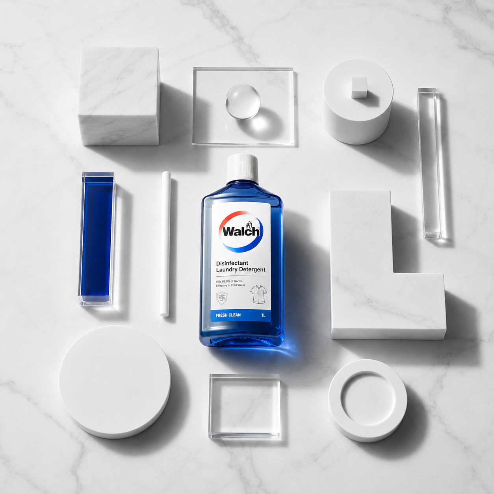
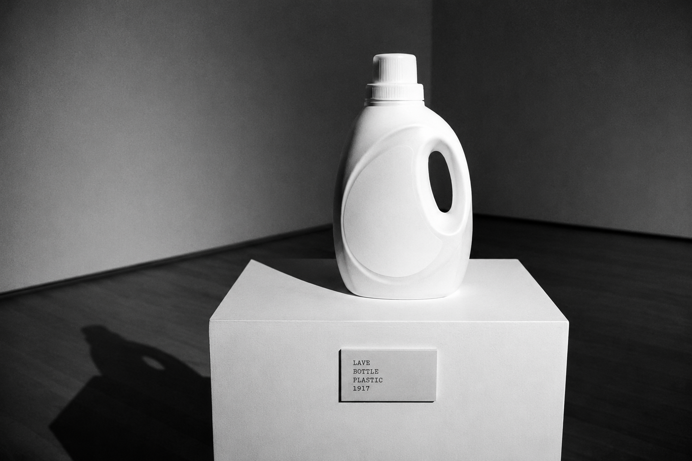
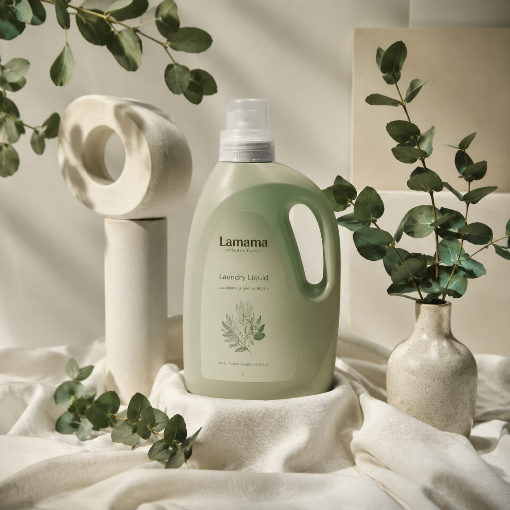
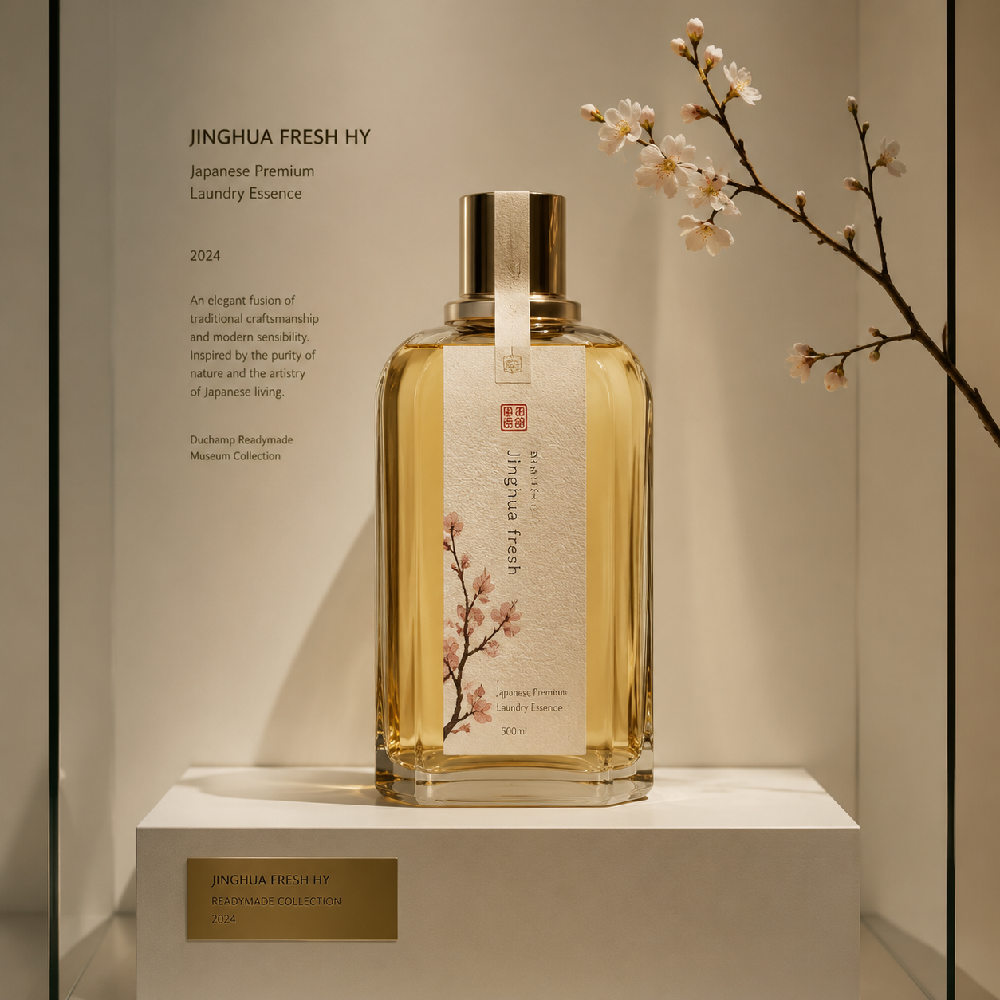
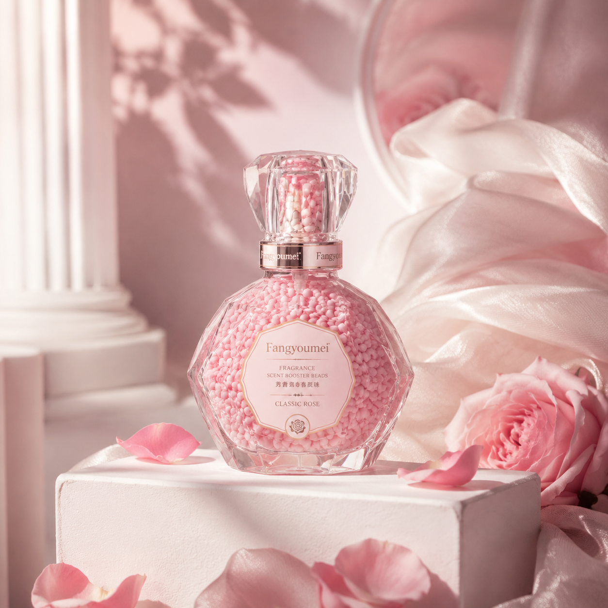
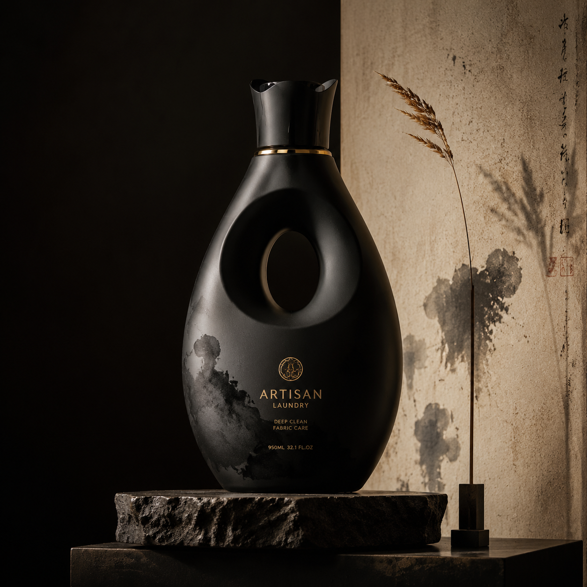

01 / Walch威露士
Mass Sterilization · 大众杀菌
科学消毒，健康到家。
以严谨的家清科研为背书，用可验证的杀菌力守护日常。威露士是矩阵中的“健康基础设施”。
有氧洗洗衣液
多用途消毒液
泡沫洗手液
杀菌湿巾

LAVE · BOTTLE · PLASTIC · NO. 01Visual Thesis
这不是传统的产品目录。我们将每一次洗涤视为一次选择：健康、自然、匠心、香气、艺术。威莱集团以科学洗护为基底，从威露士的全民防护，到 Na 的极致匠艺，构建出覆盖不同生活哲学的织物护理矩阵。
大众杀菌 → 家庭自然 → 日式精粹 → 情感香氛 → 高端匠艺
五个品牌，五种对待衣物的方式。从超市货架到美术馆基座，它们共享同一个前提：让日常之物获得尊严。

01 / WalchMass Sterilization · 大众杀菌
科学消毒，健康到家。
以严谨的家清科研为背书，用可验证的杀菌力守护日常。威露士是矩阵中的“健康基础设施”。

02 / LamamaNatural Family · 家庭自然
妈妈壹选，自然安心。
以家庭场景为核心，甄选植物来源成分，给敏感肌与婴童更柔软的答案。

03 / JinghuaJapanese Essence · 日式精粹
萃取日本，菁于日常。
源自日本王子石碱研发，把“精华”二字转化为织物上的细腻光泽与低调香气。

04 / FangyoumeiFragrance Fabric · 情感香氛
以香为衣，留香于形。
将香水级调香注入织物纤维，让衣服成为移动的香氛装置。

05 / NaArtisan Laundry · 高端匠艺
十八本匠心，一瓶入魂。
以日式匠艺与东方草木哲学，把洗护升维为日常仪式。
当一瓶洗衣液从超市货架被移上展厅基座，它便不再只是清洁工具，而是一件可被凝视的“物”。功能退后，形式上前，日常于是获得某种庄重。威莱的洗护矩阵，正是在这种功能与诗意的张力之间，寻找平衡。